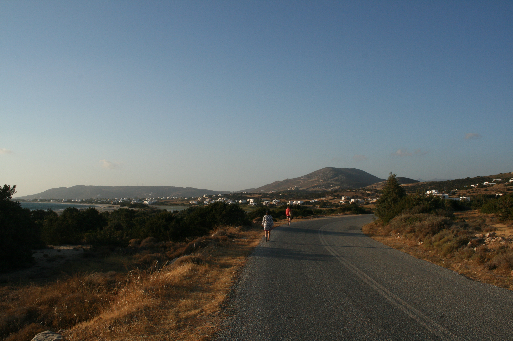
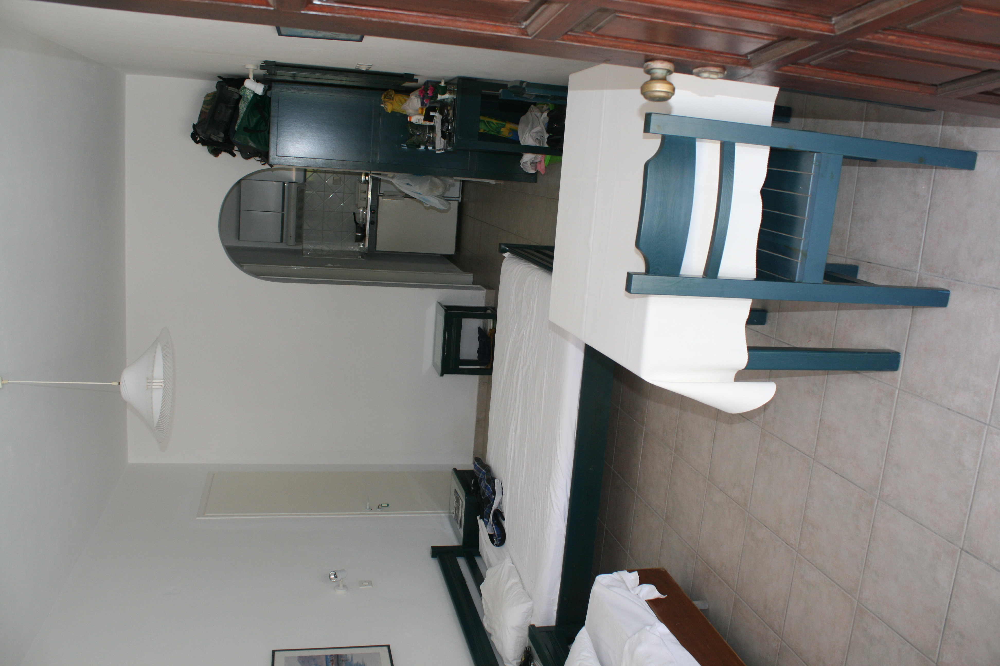
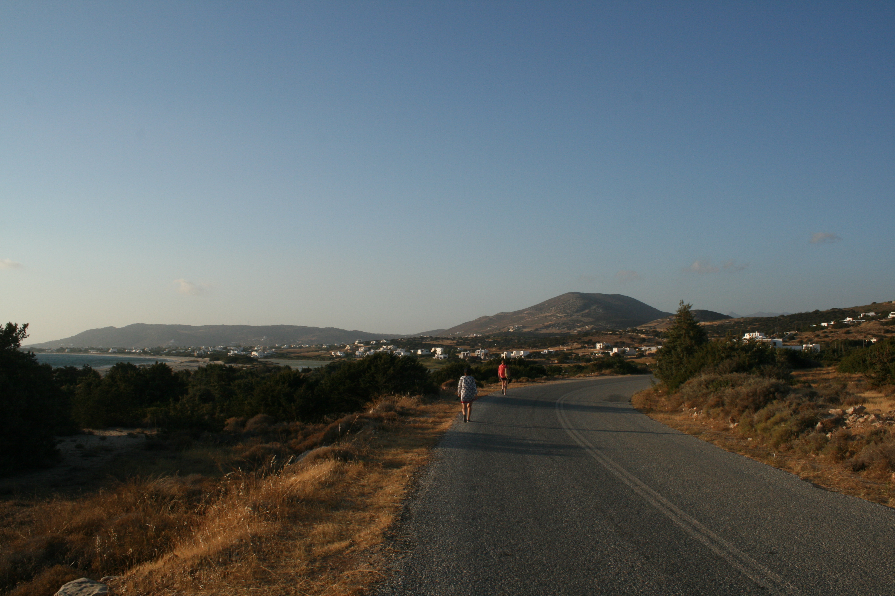
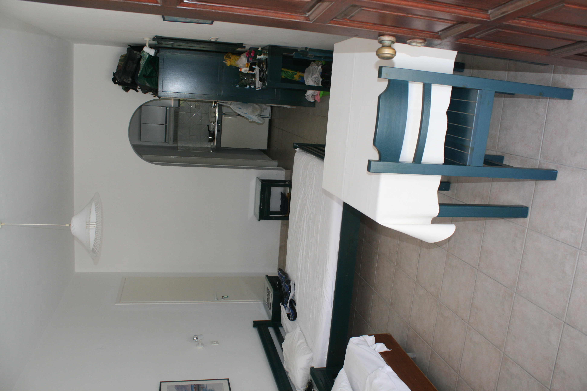

Where to Sleep: I say “where to sleep” instead of “where to stay” because I have always had the mindset when traveling that your accommodations are only a place to sleep at night or not sleep if you would rather be clubbing until sunrise. Your time should be spent outside of accommodations exploring new cities and seeking adventures. Below I included a variety of accommodations in Greece.


 



When asked if I would recommend this place, I would say yes. I would recommend it to a stranger, a friend, my sister, my teacher, my cousin, and my cousin’s friend’s brother. Ok, you understand what I mean; I loved this studio room in Naxos. In the morning I would take a short run down a private path to the beach and meditate while watching the sun paint the sky. Then I would come back to jump into the pool and sunbathe. I know what you are thinking; I am a liar considering I just wrote above that you should not spend a lot of your time at your accommodation. However, this place is an exception to the rule.
If you can’t imagine camping then renting an Airbnb is the next best option since they are typically less expensive than a hotel. The one in Rhodes transported me back to medieval times, but while still having wifi which I know is a paradox. The brick walls made the space cold without having to run the air conditioner so you could say I was “chillin' out maxin' relaxin' all cool.” The Airbnb was centrally located in the old town of Rhodes which made it a short walk home instead of what would have felt like a long hike after a whole night of dancing in the club.
A boutique campground is for all my girls who want to travel on a budget, but don’t want to fully rough it. This campground makes camping look glamorous with the immaculately cleaned pool and vineyard views. Also, the marble bathrooms I swear are nicer than the ones at home. The campground is tucked away in the mountains and gave me an “Eat Pray Love” moment. Now I know where I am going to jet off to when another boy breaks my heart.
I always asked myself before visiting if Greece’s beaches were overrated. I can safely say now that they are not. Every beach I visited was straight out of my turquoise dreams. I am a self-proclaimed beach connoisseur after spending every day on a different beach in Greece for ten weeks. A side perk to the job is getting a killer tan FYI.


I want to make sure I include a disclaimer that Greece is full of many gorgeous beaches and this is just merely a list of the well-known beaches that lived up to their high expectations. However, if you want to find hidden beaches that are gems, go off the beaten path. The best beaches I saw in Greece were down gravel roads that did not have a sign or clear path. I guess what I am trying to say is that if you want to be amazed by Greece’s beauty; you have to explore it yourself.
Say goodbye to the relaxing beach bum life because next week I’ll be showing you what it is like to road trip across the Western USA. Get your hiking boots ready!